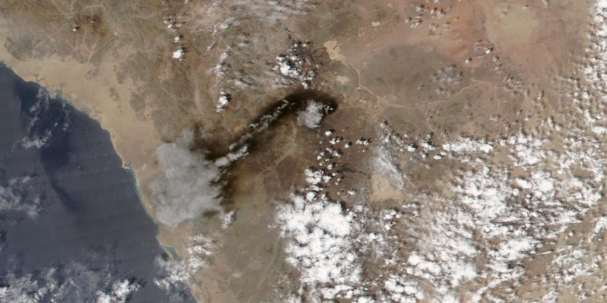
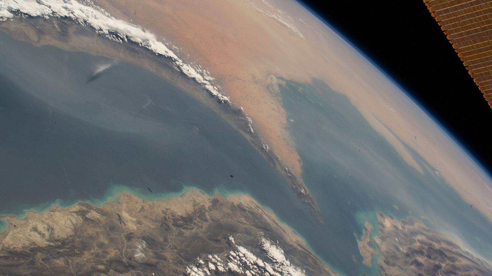
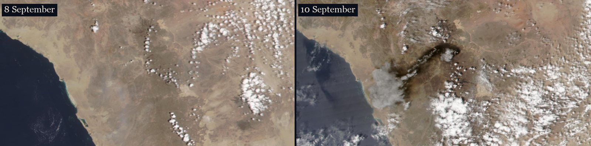
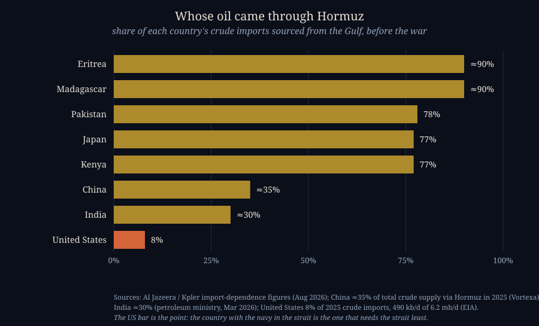
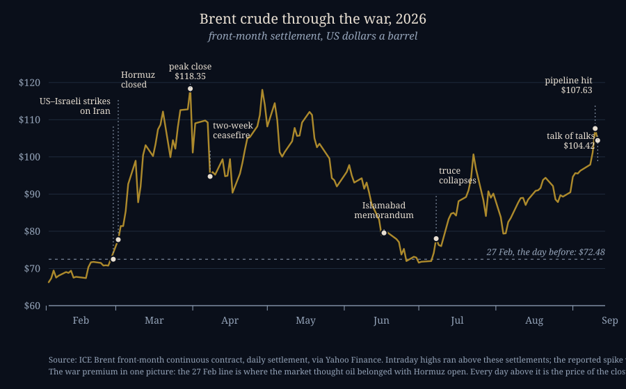
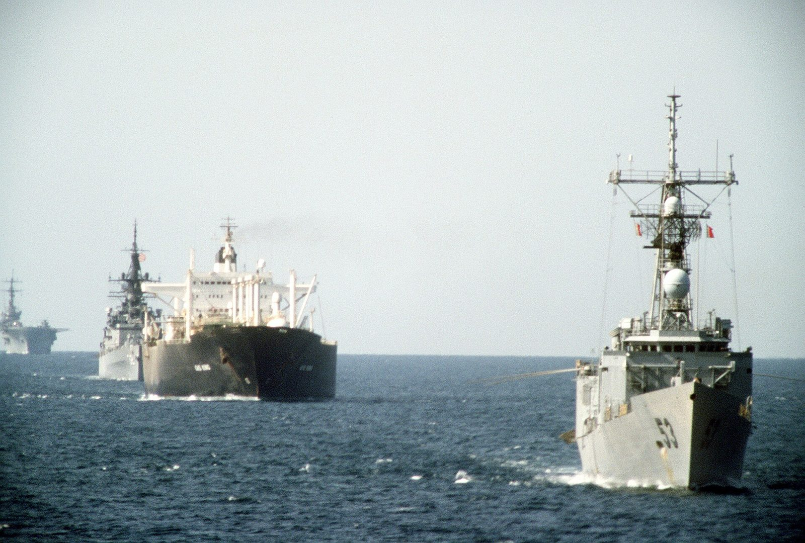

The Escape Valve
THE WORLD · SEPTEMBER 11, 2026

On Thursday morning, 10 September 2026, several pumping stations on the East–West pipeline — the 1,200-kilometre line that carries Saudi crude from the oil fields on the Persian Gulf across the whole width of the country to the port of Yanbu on the Red Sea — were hit by drones. Saudi Arabia shut the line down. The kingdom's press agency called it a precaution; an American official told reporters the drones had come from Iraq, and by Friday night the Saudis had said so officially. By afternoon on Thursday the smoke was big enough that NASA's fire satellites were flagging it, and by evening a friend had sent me a link with the words you can see it from space. You can. That is it, at the top of the page.
I live about as far from the Arabian Peninsula as it is possible to live, and the thing I wanted to know was not who fired the drones. It was how much of the world's oil is really not moving right now, why one pipeline in the desert should matter this much, and whether there is a single thing a person in my position should do differently because of it. This is what I found. Along the way I discovered that three things I believed on Thursday evening were wrong, and I've left those corrections in, because the mistakes are the useful part.
How Much of the World's Oil Is Not Flowing?
Start with the part I had half-right. The Strait of Hormuz — the 33-kilometre-wide gap between Iran and Oman that every tanker leaving the Persian Gulf has to pass through — has been effectively closed to commercial shipping since 2 March, two days after the United States and Israel struck Iran. That is more than six months, not a news item from this week. Before the war about a hundred ships a day went through; by late August it was about five, a 95 percent drop. Two ceasefires have come and gone. The strait is, in the words of one tracking site, closed on day 193.

But here is the thing I had wrong: the oil did not stop. It halved. The Gulf states were exporting about 17 million barrels of crude a day before the war; by August they were still getting about 9 million out. The difference is almost entirely two pipelines that go around the strait instead of through it — and by far the bigger of the two is the one that was hit yesterday.

The East–West pipeline can move about 7 million barrels a day and, since March, has been running around 5 million of them to Yanbu, where tankers load on the Red Sea and never go near Hormuz at all. The UAE's line from Habshan to Fujairah adds roughly another 1.5 million. A couple of million more still slip through the strait itself — Chinese-owned ships mostly, moving along routes Iran has approved. Add it up and you get the 9 million.
Which is why yesterday is a bigger event than a fire in a desert. Look at who got hurt by the closure and who didn't. Port calls at Kuwait are down 86 percent since March; at the UAE, 69 percent; Iraq, Qatar and Bahrain, about two-thirds. Saudi Arabia: down 15 percent. The pipeline is the entire reason the largest exporter in the region has been the least damaged one. It was the escape valve — for Saudi Arabia, and by extension for everyone who buys from Saudi Arabia. Somebody has now put drones into it.

The one thing to watch this week. The reports say pumping stations were hit, not the trunk line, and the distinction matters more than anything else in this story. When strikes in April knocked about 700,000 barrels a day off the same system, Saudi Arabia had it back in weeks. A pumping station is machinery in a building; a ruptured trunk line across 1,200 km of desert is a different order of repair. As of Friday nobody outside Aramco knows which it is.
The Irony About Where the Drones Came From
If the American official is right that the drones came from Iraq — Iran-aligned militias there have hit Saudi Arabia this way before — then they were launched from the one country the closure has hurt more than any other. Between 96 and 97 percent of Iraq's crude exports go through Hormuz; oil is roughly 90 percent of the Iraqi state's income; production at Basra fell from 3.3 million barrels a day to under a million. Iraq has been floated as a candidate for a new pipeline north to Turkey precisely because it has no escape valve of its own. And drones flown from its territory just closed its neighbour's.
Update, 12 September. It is no longer an "if." On Friday Saudi Arabia's foreign ministry said officially that the pipeline was hit by "several drones originating from Iraq," and — this is the part worth reading twice — that the Kingdom "has chosen not to respond at this stage and to support the efforts of the Iraqi government." Early Saturday, Iraq's prime minister dismissed the military commander of Maysan province, on the Iranian border, after Baghdad's own investigation put the launch site inside it. Nobody has claimed the attack. So the precise statement is: launched from Iraqi soil, almost certainly by the Iran-aligned militias Baghdad does not control, with Baghdad scrambling to show it is on Riyadh's side and Riyadh choosing, for now, not to hit back. "Iraq did it" is true of the territory and false of the government, and that distinction is the whole reason the war hasn't widened by another country this weekend.
It Isn't Only Oil
This is the second thing I hadn't taken on board. I had been thinking of Hormuz as an oil story. It is also:
- A gas story. About a fifth of the world's liquefied natural gas went through the strait, nearly all of it Qatar's. Europe was getting 12 to 14 percent of its LNG that way.
- A food story. Up to 30 percent of internationally traded fertilizer moved through the strait — the Gulf makes 30 to 35 percent of the world's exported urea and 20 to 30 percent of its ammonia. Fertilizer that doesn't ship this autumn is grain that doesn't grow next spring, and that bill arrives at grocery stores nowhere near a tanker.
- A human story. Seventy-one attacks on ships since March, by the count of the crisis's Wikipedia editors; 20 seafarers dead, 35 injured; at one point in April 2,000 ships and 20,000 sailors sat trapped inside the Gulf. War-risk insurance for one transit went from an eighth of a percent of a ship's value to as much as four-tenths, and for a big tanker that is a quarter of a million dollars per trip.
Where the Oil Is Going Instead
Oil that can't get out of the Gulf doesn't vanish; the buyers go elsewhere, and elsewhere has had a very good six months. Here is the map I actually wanted when I started — where the barrels are moving now.
![A world map centred on the Indian and Pacific oceans showing where oil is flowing in September 2026. A gold ribbon from the Persian Gulf to China, Japan, Korea and India is drawn thin and dashed, labelled cut roughly in half. An orange ribbon from the US Gulf Coast to Asia is labelled 3.3 million barrels a day, three times pre-war. A blue ribbon from Venezuela to the United States is labelled 0.79 million barrels a day, a seven-year high. Magenta ribbons from Russia to India and China are labelled record volumes.](img/where-the-oil-goes-now.svg)
The United States. This part I had right, and it's bigger than I thought. American crude production is running at a record, just under 14 million barrels a day. In April US petroleum exports set an all-time record, and crude shipments to Asia roughly tripled from their pre-war level — American barrels are now filling Japanese and Korean and Indian tanks that Saudi barrels used to fill.
Venezuela. I had written "probably using some of our power in Venezuela" in my notes. The reality is well past probably. US forces took Maduro out of Caracas on 3 January; an interim government has run the country since; the oil revenue flows through a US Treasury account. Venezuela shipped 786,000 barrels a day to the United States in July, the most in seven years, and Chevron announced last week it would spend $7 billion to double its Venezuelan output. China, which used to be Venezuela's biggest customer, is being crowded out.
Russia. This is the third thing I got wrong, and I got it backwards. I assumed Russia couldn't take advantage of $100 oil while fighting its own war. The opposite is true. Russia's Urals crude averaged $112 a barrel in April, two and a half times the Western price cap that is supposed to constrain it. India's imports of Russian crude have set records two months running; Russian fuel oil going to Singapore and Malaysia jumped two and a half times in July. The closure of Hormuz is, among other things, a subsidy to the Russian war effort. What is true is that Russia's exports of refined products are at the lowest level on record — its refineries are the part that is struggling, not its wells.
And the table I most wanted to see — whose oil actually came through that strait:

Read the bottom bar twice. The United States gets eight percent of its imported crude from the Gulf, and it produces more than it imports. Japan gets 77 percent. Pakistan 78. The country with the aircraft carriers in the strait is the one that needs the strait least, and the countries that need it most have no navy there at all. Hold that thought for two sections.
What the Price Is Saying

The chart answers a question I had been asking badly. Oil was $72 on 27 February. It closed at $118 on 31 March, drifted back into the $80s over the summer as two ceasefires flickered, and has climbed through $100 again as they failed. The pipeline attack sent it to about $108 on Thursday. Then on Friday, on nothing more than reports of renewed diplomatic contact about reopening the strait, it fell almost 3 percent to a little over $104.
That Friday move is the whole lesson about the "war premium." Roughly $30 of the price of a barrel today is the closure — the gap between the dashed line and the gold one. It is real, it is justified by the facts on the ground, and it can evaporate in a single trading session on a rumour of peace. It did a small version of that yesterday. Meanwhile the price at the pump for people who have never heard of Yanbu: the American average hit $4.30 a gallon on Friday.
The stockpiles. In March the IEA's member countries agreed to release 400 million barrels from their emergency reserves, the largest release in the agency's fifty-year history; the United States put up 172 million of them. The world uses about 100 million barrels a day. The largest emergency release in history bought four days.
Will the United States, or NATO, Just Go In and Take the Strait?
I asked this as if it were hypothetical. It isn't; most of the options have already been tried at least once in the last six months, which is itself the answer to how easy any of them are.

- Escorting tankers through. The Navy did this in 1987–88 and launched it again on 4 May this year as "Project Freedom." It was paused two days later, on 6 May, when the White House said negotiations were making progress. Iran's 2026 toolkit — mines, drones, shore-launched missiles — is a great deal nastier than its 1987 one.
- Blockading Iran back. Done: the US Navy blockaded Iranian ports from 13 April to 29 May, lifted it, and resumed it in July. As of this week the two sides are hitting each other's tankers, and Iran has fired a ballistic missile toward a US carrier.
- Clearing the mines. Ongoing; on 25 August the Navy said it had identified more than a hundred suspected mines in the shipping lane. Clearing mines while the people who laid them are still laying them is a job with no end date.
- Seizing the strait itself. The President said in March the US "might seize control" of the waterway and later mused about renaming it. Nobody has attempted it. Holding the strait means holding the Iranian coast and islands on its northern side, which means an invasion of Iran, which is a different war than the one being fought. Meanwhile Iran has done the mirror-image thing on paper: in May it created a "Persian Gulf Strait Authority" that claims the right to license every transit.
- Making a deal. Two have been signed and both collapsed within days — the April two-week ceasefire and the Islamabad memorandum of 17 June. Oman is carrying messages again this week, which is what the oil market was reacting to on Friday. An Iranian analyst quoted by Al Jazeera put Tehran's view plainly: neither side can back down without looking as though it lost, so the only option is to escalate.
And NATO? I looked, and I found nothing. No European or Asian navy is operating in the strait. That is the strangest fact in this whole story to me: the countries whose economies actually run on that oil — Japan, Korea, India, China — are watching, and the country that could get by without it is the one doing the fighting. The UAE, for its part, has stopped waiting on anyone: it is fast-tracking a second pipeline to Fujairah, due in 2027, to double the volume it can move without going through Hormuz. Escape valves are the growth industry of 2026.
What Can a Person on the Other Side of the Planet Do?
About the strait, nothing. I want to be honest about that rather than end with a list of seven things. But I did come out of this with three things I'm keeping in mind, and I'll label them as opinions, because that's what they are.
First, for a household, energy is a cost line, not an investment line. The way this war reaches me is through the price of a gallon of gas, the price of a kilowatt-hour, the price of a bag of fertilizer folded into the price of bread next spring. Those are the numbers that actually move in my life, and the useful question is how exposed my own budget is to them. The car in my driveway happens to run on electricity, which I did not buy as a hedge against the Strait of Hormuz, but this week it is one. The sun keeps getting cheaper, and the barrel keeps getting more political; over a long enough horizon I don't think it's close which of those I'd rather depend on.
Second, the war premium is a bet on diplomacy, not on oil. The question I kept circling on Thursday night was whether this is the moment to own oil companies. My honest answer is that I don't have an energy portfolio, and this week is a good illustration of why. Thirty dollars of the price of a barrel is a closed strait. If a deal is signed, that thirty dollars leaves in an afternoon, and Friday showed what a rumour of a deal does. If instead things escalate, oil is already over $100 and the world starts using less of it, which caps the upside. Whichever way it breaks, you are not betting on geology or on a company; you are betting on whether two governments that have each said they can't back down will back down, and I have no edge on that at all. I have never been able to read the room in energy, and I have stopped pretending I can. Someone who can, should.
Third, the thing to watch isn't the price; it's the repair. The pumping-station-versus-trunk-line question in the box above will decide whether this is a two-week story or a six-month one for Saudi Arabia, and it will be answered by satellite photos and Aramco statements over the next few days, long before it shows up as a number. If the plume in the picture at the top of this page is gone by next week and the line is pumping, yesterday was a bad day. If not, the escape valve is closed, and the map on this page gets redrawn.
Where I Could Be Wrong
The flow figures are estimates from ship-tracking firms, quoted by news organisations, not audited numbers; "about 9 million barrels a day" could easily be 8 or 10. I don't know how much the East–West pipeline carried before the war, so the "before" panel of the first map shows it thin and unnumbered rather than guessed. The attribution of the drones to Iraqi territory rested on one unnamed American official when I wrote this on Friday; by Saturday both governments had confirmed it (see the update above), but who flew them is still unclaimed. The satellite plume is unambiguous — it isn't there on the 8th and it is on the 10th — but I've placed it by eye against the pipeline's route, and I could be off by some kilometres. And on the question I care most about, which is whether the pumping stations or the pipe itself were hit, I'm as much in the dark as everyone outside Dhahran. If you know better on any of it, the address is below.
Sources
- Saudi Press Agency. East–West Pipeline Shut Down as a Precaution Following Multiple Attacks. 11 September 2026. https://www.spa.gov.sa/en/N2674017
- CNN. Saudi oil pipeline shut down after attack triggers fires. 11 September 2026. https://www.cnn.com/2026/09/11/politics/saudi-arabian-oil-pipeline-hit-by-projectiles-triggering-fires
- OilPrice.com. Drone Strikes Hit Saudi Arabia's Vital East-West Oil Pipeline. 11 September 2026. https://oilprice.com/Latest-Energy-News/World-News/Drone-Strikes-Hit-Saudi-Arabias-Vital-East-West-Oil-Pipeline.html
- CNBC. Saudi Arabia shut down East-West crude oil pipeline after multiple attacks. 11 September 2026. https://www.cnbc.com/2026/09/11/saudi-arabia-shut-down-east-west-crude-oil-pipeline.html
- Al Jazeera. How a 95 percent drop in Hormuz traffic changed global shipping. 27 August 2026. https://www.aljazeera.com/news/2026/8/27/how-a-95-percent-drop-in-hormuz-traffic-changed-global-shipping
- Al Jazeera. US, Iran engaged in tanker war: Where is the months-long conflict headed? 6 September 2026. https://www.aljazeera.com/news/2026/9/6/us-iran-engaged-in-tanker-war-where-is-the-months-long-conflict-headed
- CNBC. The two oil pipelines helping Saudi Arabia and UAE bypass the Strait of Hormuz. 12 March 2026. https://www.cnbc.com/2026/03/12/strait-of-hormuz-oil-pipelines-iran-war-saudi-arabia-uae.html
- CNBC. UAE says new pipeline that will bypass Strait of Hormuz is nearly 50% complete. 20 May 2026. https://www.cnbc.com/2026/05/20/uae-pipeline-strait-hormuz-iran-war-oil.html
- US News / Reuters. Iraq Could Restore Oil Exports to Pre-War Level Within a Week if Hormuz Reopens, Basra Oil Chief Says. 6 April 2026. https://www.usnews.com/news/world/articles/2026-04-06/exclusive-iraq-could-restore-oil-exports-to-pre-war-level-within-a-week-if-hormuz-reopens-basra-oil-chief-says
- Reuters via Yahoo News. Saudi Arabia says East-West pipeline hit by drones launched from Iraq (Saudi foreign-ministry statement; Iraq's condemnation and the dismissal of the Maysan commander). 11–12 September 2026. https://www.yahoo.com/news/world/articles/saudi-arabia-says-east-west-213047644.html
- Asharq Al-Awsat. The High Cost of Hormuz: $37 Billion Shock Exposes Iraq's Economic Vulnerability. 2026. https://english.aawsat.com/business/5287019-high-cost-hormuz-37-billion-shock-exposes-iraq%E2%80%99s-economic-vulnerability
- Wikipedia. 2026 Strait of Hormuz crisis (timeline, commodity shares, insurance, casualties, ship attacks). https://en.wikipedia.org/wiki/2026_Strait_of_Hormuz_crisis
- USNI News. U.S., Iran Trade Strikes in Strait of Hormuz as Both Battle on Social Media. 4 September 2026. https://news.usni.org/2026/09/04/u-s-iran-trade-strikes-in-strait-of-hormuz-as-both-battle-on-social-media
- CNBC. The biggest release of emergency oil stockpiles in history was announced. 14 March 2026. https://www.cnbc.com/2026/03/14/iran-war-iea-oil-stockpile-spr-strait-hormuz.html
- CNBC. Oil prices fall Friday, but post sharp weekly gains as tensions in the Middle East rise. 11 September 2026. https://www.cnbc.com/2026/09/11/oil-price-today-iran-brent-wti-trump.html
- AAA. National average gas prices. 11 September 2026. https://gasprices.aaa.com/?state=US
- US Energy Information Administration. United States on track for record crude oil production in 2026. https://www.eia.gov/todayinenergy/detail.php?id=68125
- US Energy Information Administration. U.S. exports of crude oil and petroleum products reached record in April. https://www.eia.gov/todayinenergy/detail.php?id=67825
- Hydrocarbon Engineering, citing the EIA. The Middle East Gulf was source for 8% of 2025 US crude oil imports. 7 April 2026. https://www.hydrocarbonengineering.com/refining/07042026/eia-the-middle-east-gulf-was-source-for-8-of-2025-us-crude-oil-imports/
- Vortexa. China's crude import stress resistance in a Hormuz crisis. 2026. https://www.vortexa.com/insights/chinas-crude-import-stress-resistance
- All India Radio News. India secures 70% of crude oil imports outside Strait of Hormuz: Petroleum Ministry. 11 March 2026. https://www.newsonair.gov.in/india-secures-70-of-crude-oil-imports-outside-strait-of-hormuz-petroleum-ministry/
- S&P Global. Venezuela's oil industry is operating after US seizes Maduro. 3 January 2026. https://www.spglobal.com/energy/en/news-research/latest-news/crude-oil/010326-factbox-venezuelas-oil-industry-is-operating-after-us-seizes-maduro
- Rio Times. Venezuela's Oil Exports to the US Hit a Seven-Year High. 2026. https://www.riotimesonline.com/venezuela-economy-after-maduro-2026/
- CNN. Chevron pledges to double its Venezuelan oil production. 2 September 2026. https://www.cnn.com/2026/09/02/economy/chevron-venezuela-oil
- Centre for Research on Energy and Clean Air. April 2026 and July 2026 — Monthly analysis of Russian fossil fuel exports and sanctions. https://energyandcleanair.org/april-2026-monthly-analysis-of-russian-fossil-fuel-exports-and-sanctions/ · https://energyandcleanair.org/july-2026-monthly-analysis-of-russian-fossil-fuel-exports-and-sanctions/
- NASA Worldview / EOSDIS GIBS. VIIRS (NOAA-20) corrected-reflectance imagery, 8 and 10 September 2026. Public domain. https://worldview.earthdata.nasa.gov/
- Natural Earth. Public-domain map data used for the two flow maps. https://www.naturalearthdata.com/
- Brent settlements: ICE Brent front-month continuous contract via Yahoo Finance, pulled 11 September 2026.
- Photographs: NASA, The Strait of Hormuz connects the Gulf of Oman with the Persian Gulf, public domain, via Wikimedia Commons; PH2 Elliot, US Navy, USS Hawes, USS William H. Standley and USS Guadalcanal escort tanker Gas King, 21 October 1987, public domain, via Wikimedia Commons.